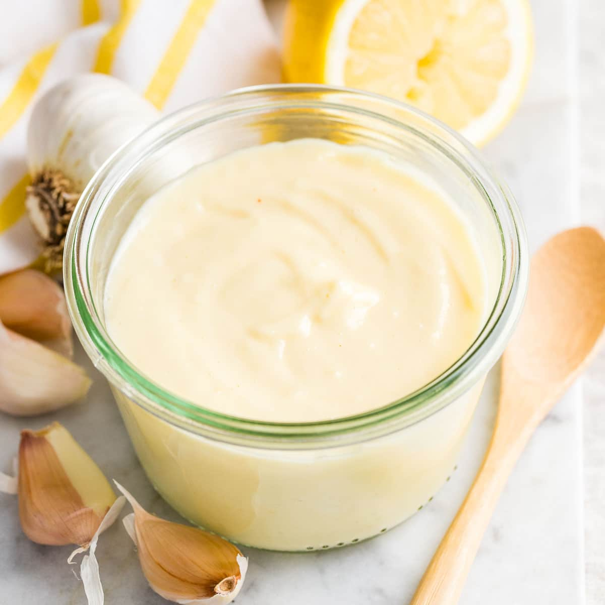

Aioli Recipe

This recipe will result in a silky smooth aioli sauce. It's a great
topping for a burger, and can be used as a
dipping sauce for french fries.
What IS aioli, you ask? Aioli is a garlic flavored mayonnaise.
It's typically prepared with a slightly thinner texture than american
mayo. This gives it a nice smooth, saucy consistency that makes it very versatile.
Ingredients
- 2 egg yolks
- 1 garlic clove, grated or minced
- 2 TBSP fresh lemon juice
- zest of one lemon
- 1 cup neutral oil (avocado, canola, vegetable, etc)
- Salt and pepper to taste
Instructions
- Blend the base.
Combine egg yolks, garlic clove and lemon zest in blender. Blend for 60 seconds. With the blender still running, slowly drizzle in half
the lemon juice. Wait 30 seconds. The mixture should be frothing up a little bit. SLOWLY drizzle in ~1 TBSP of oil and let the
blender mix it together. The mixture should be smooth now.
- Incorporate the oil.
This is the most important step. Please work slowly and give the sauce time to absorb the oil. This ensures the emulsion works and
the sauce remains smooth. With the blender still running, slowly drizzle in half of the remaining oil. Then drizzle in half of the remaining lemon juice. Take
a moment to observe the texture now. More oil will make it thicker, more liquid will make it thinner. Adjust your ratios accordingly.
- Finish seasoning.
Taste your sauce and add salt and pepper as needed.
- Enjoy!
Now you know how to make a french aioli! You can put it on anything that needs a rich, garlicy flavor.